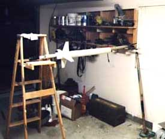
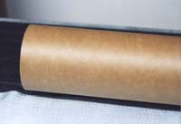
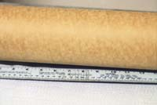
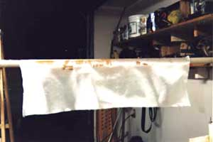
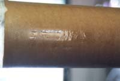
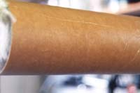

Composite Tube Reinforcement
 |
There are a multitude of suppliers for resin and fiberglass cloth. This article doesn't recommend one supplier over another, but instead discusses the different types of cloth and resin available from most suppliers.
There are two types of resin available for fiberglassing, Polyester and Epoxy resin. Epoxy is superior to Polyester resin in strength, shelf life and adhesion, although more expensive. This article discusses composite reinforcement exclusively with epoxy resin. When purchasing resin for a project, the three most important qualities to pay attention to are low viscosity, cure temperature, and pot life. It is important to use a low viscosity resin which will 'wet out' the cloth and penetrate the surface underneath as much as possible. Next, the resin's cure temperature must meet your environmental conditions. For example, if the minimum cure temperature of a resin is 60 degrees, it is not suitable for use in an unheated garage during the colder months of the year. Last, the pot life (amount of time before the resin begins to gel) of the resin must be long enough to allow for applying the cloth. This is more important on larger projects.
Like resin, there are many different types of fiberglass cloth. Two terms used when describing cloth are weave and weight. The most common weave is a standard over-under, which is used in most reinforcing applications as the main structural layer, and leaves a coarse surface for finishing. Slightly less common is satin weave (also referred to as crowfoot). This type of cloth is slightly stronger than standard weave, more tightly woven, and leaves a smoother surface for finishing. The weight of a cloth refers to how much a measured amount of the cloth weighs. Heavier cloths are generally coarser while lighter cloths have finer surfaces, making them better for finishing layers. Most rocketry applications utilize fiberglass cloth in the 2oz to 6oz range.
There are other types of cloth besides fiberglass. Carbon fiber and Kevlar cloths are made from high-tech materials and can be quite expensive. Carbon fiber is very lightweight and the stiffest composite reinforcement cloth available. Its drawbacks are its high cost (as much as $60 per yard), and low resistance to impact. Carbon fiber cloth is generally available in standard and specialized weaves, and unidirectional 'tape'. The unidirectional tape is a great product, usually much less expensive than the woven cloth. As its name implies, unidirectional carbon consists of fibers oriented in only one direction, stitched together every few millimeters to keep it manageable, and is available in widths up to 12". When using this material in composite reinforcement, it provides stiffness perpendicular to the orientation of the fibers. Using multiple layers with the fibers oriented perpendicular to each other will provide reinforcement in both directions.
Like Carbon fiber, Kevlar cloths can be quite expensive. Kevlar's main advantages are its high strength to weight ratio and its excellent resistance to impact damage (Why else would it be so ideal for bullet-proof vests?). It is available in weaves and weights similar to fiberglass, and may be used in the same manner, but where lighter weight and superior strength is desired.
When choosing the cloth for a rocket, the most important factors to consider are the size of the rocket (diameter) and the stresses you expect it to be subjected to. As a rule of thumb, the larger the rocket, the heavier the cloth. For example, two layers of 2oz cloth works well for 3-4 inch rockets, 2-3 layers of 4oz for 5-7.5 inch rockets, and so on. On rockets that are expected to hold up under unusually high stress conditions (like mach busting) heavier cloths may be used, more layers, high-tech materials (kevlar or carbon fiber), or any combination. A minimum of two layers should be used. When cloth is applied, there are always a few bubbles or wrinkles that end up getting sanded through and become weak spots. When more than one layer is applied, the chances of the weak areas being in the same location between layers are reduced.
|  |
| Fig 1. A workspace needs good ventilation, and suitable support for your project |
It is important to have a suitable work area for fiberglassing. Ideally, the work area should be large enough to fit your rocket, well ventilated, and warm. A garage will usually fit the first two criteria, but is not always warm. Fortunately, there are resins available that cure in lower temperatures, so this is not as much of a concern. Check the resin's label.
Ventilation is very important because of the toxic nature of epoxy. Too much contact with epoxy resin, fumes, and sanding dust will produce an allergic reaction. The symptoms include severe headaches, chest pain, flu-like symptoms, and cracked & bleeding skin. Once someone has developed an allergy, they can never work with epoxy without suffering the symptoms. To prevent developing an allergy, ALWAYS use gloves and only work in a well-ventilated area. To further protect yourself, wear a dust/vapor mask.
Once you have a clear and safe working area, the rocket/tube needs to be supported at a height that is easy to work with. An ideal setup is two ladders with a closet dowel between them, providing a stable support for your project at whatever height is most comfortable, depending on which rung the dowel is placed on.
|  |
| Fig 2. A fresh phenolic tube needs surface prep before resin can be applied |
Before the resin can be applied, the surface must be prepared. This involves roughing up the surface of the tube with coarse sandpaper, 60 grit works well. Don't worry if you gouge the heck out of the tube, all the better for the resin to soak in. When reinforcing cardboard tubes, be sure to sand through any glassine (glossy) coating on the surface of the tube. Next, cut your cloth to size. The cloth should be large enough to wrap around the tube with about an inch of overlap, and an inch or so over the ends of the tube.
Applying the resin and cloth
Once the surface of the tube is prepared and the cloth is ready, don protective gear and mix up the resin. It is of the utmost importance to follow the instructions for the resin closely, using the correct proportion and mixing very well. The more thoroughly it is mixed, the better the resin will cure and the stronger the finished product will be. Improperly or insufficiently mixed resin will produce soft and sticky results.
|  |
| Fig 3. The same tube, now sanded and ready for resin. Note the lack of gloss. |
There are several ways to apply the resin to the tube, including just pouring it on and smearing it around with your (gloved) hands, using a paintbrush, or using a squeegee tool available from most fiberglass suppliers. The hand method is fun, but gets messy fast and can waste resin. Brushes work moderately well, but bristles tend to fall off and get stuck in the resin, plus you often end up with excess epoxy on the project. Squeegees work well on larger tubes (larger than 3 inches) and make it easy to spread resin, but are harder to use on small diameter tubes. Use whichever method works best for you.
|  |
| Fig 4. Starting the cloth on the tube. |
Continue rolling the tube and applying the cloth and resin in this way until all the cloth has been rolled onto the tube. Next, make another trip around the tube and work out any remaining bubbles or wrinkles. Be patient, this generally is the most time consuming part. Once you are satisfied the bubbles are worked out, look for over-wet spots. Most likely there are areas where there is too much resin, resulting in dead weight. Lightly soak up all excess resin. It can be easy to create bubbles, so be careful.
|  |
| Fig 5. Puddles of excess resin that need to be removed. |
Not only does this reduce excess weight, but it ensures the fibers of the cloth are as close as possible to the tube or layer underneath, increasing the strength of the reinforcement. Once you're satisfied you've soaked up all the excess resin, leave it to cure.
Once the project has been allowed to fully cure at least 24 hours, go over the surface with some medium or fine grit sandpaper, sanding out any bubbles, wrinkles, or puddles that were missed. Don't sand through the fibers of the good areas, just rough it up a little. This prepares the surface for the next layer. Apply the second layer the same as the first. The surface will take slightly less resin when applying to the tube because it is not as porous.
|  |
| Fig 6. The same tube, after soaking up the excess resin. |
After all layers have been applied, the resulting texture of the fiberglass on the tube may be filled in several ways. My personal favorite is Hobby-Poxy Primer/Filler. A thick, white primer that is brushed on, fills very well, and is very sandable. Automotive spray primers can also be used, but do not sand as well. Another method is to use epoxy, mixed with glass microspheres (available from fiberglass and resin sources). This reduces the weight of the epoxy, thickens it, and makes it sandable. Once you are satisfied with the finish, apply your favorite paint, and you're ready to go!
Submitted by Greg Deputy.